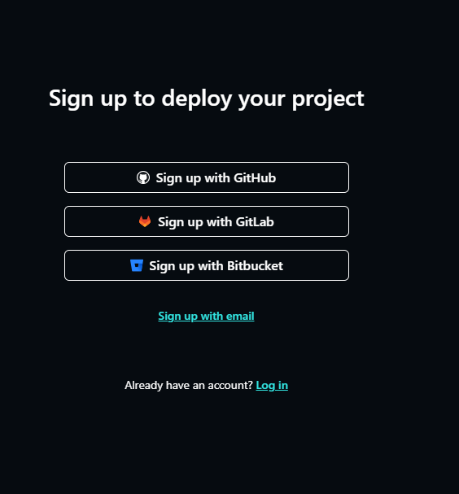

Instructions:
1. Making a Netlify account (optional)
2. Deploying the git
3. Waiting and Watching it work
Step 1: making a Netlify Account
If you already have a netlify account, skip this step.
Go to Netlify sign up and click Sign up with Github.

Sign in to GitHub, if you have not done so yet, and authorize Netlify.
Netlify should now ask you a few more questions:
Make sure you follow the directions below
In the first box, choose "personal" for a free account. Choose I am a hobby developer. Choose my first project will be a personal website so Netlify does not bug you. Then click Set up and continue.


When you get to the page pictured below, you have completed this step. Proceed to step 2.

Step 2: Deploying the git
Click the deploy button:

Click connect to Github

Click Authorize Application

Wait a bit, and this screen will pop up, In the middle of the screen, press the deploy settings button, and navigate to Environment Variables.

Click add a variable on the top right.
In the key textbox, enter username
In the values textbox, enter the email you used to sign up for rbr.

Click add a variable on the top right.
In the key textbox, enter password
In the values textbox, enter the password you used to sign up for rbr.

MAKE SURE THAT username AND password ARE SPELLED EXACTLY AS SUCH, LOWERCASE, AND NO SPACES. The username and password are just your rocketbotroyale username/password. This info is only used to sign into Rocketbot for each coin redeem, it is not kept or retained, only stored in Netlify. If you do not do the above, the acr will not work.
If you forgot to do the above or the page changed before you could enter settings, go to Netlify dashboard, find the app you just deployed under the "sites" block, and click on it. Then, click on the button site configuration to enter settings and do the above steps. It does not matter when you do this, the ACR will just not work until these values are inputted correctly.
Step 3: Watching it work
You should now be at a page about your deploy. Wait until the deploy finishes, it will look something like this. Notice it says your deploy is complete. If not, wait a bit until it does or gives an error. If an error occurs, and you think you did everything above correctly, join the discord (link in header of this website) and ping ACRv2-support with a screenshot of the build and deploy logs
Now go to the left side panel, and click logs. Then, under logs click functions.
Click on the function acrv2. Then, to the right of the words "Function log", click the button that says Real time, and select past 2 hours
For some reason, Netlify is really unreliable with the function startups. If the function "acrv2" does not show up, give it an hour or two, click back there, and see if it pops up again. If it has been over 24 hours, join the discord (link in header of this website) and ping ACRv2-support with a screenshot of the build and deploy logs, if possible, and what you are seeing on the functions page.
Now the deploy is done, you do not need to do anything to keep it up and running, it does that by itself. You can close all the tabs you opened to deploy.
Now to see if it is actually working, Wait approx. 2 hours, and come back, load Netlify, navigate into the functions page as explained above, and click on acrv2. (or just keep it open).
You should see something like the above. Click on the part that says "past 2 hours" in the picture above, (it should say real-time on your end) and change it to last 2 hours to see the logs.
The yellow messages are WARN messages, signaling an error or completion. If you see a pair of them together, with one saying Axios Error, then that request did not work, because it was not time to collect the bonus yet. If you see a single one that says Process Completed then it worked that request. There should be one working message every 30 or 35 min. If over the past 2 hours, there was not consistantly a working message every 6-7 logs, then post in the discord (link in header of this website) and ping ACRv2-support.
The ones in the above image that are boxed in green were working requests that collected coins. If you look at the timestamps, they are spaced around every 30 minutes. One successful request should occur every 30-35 min.
If you have any questions post them in the discord (link in header of this website) and ping ACRv2-support.